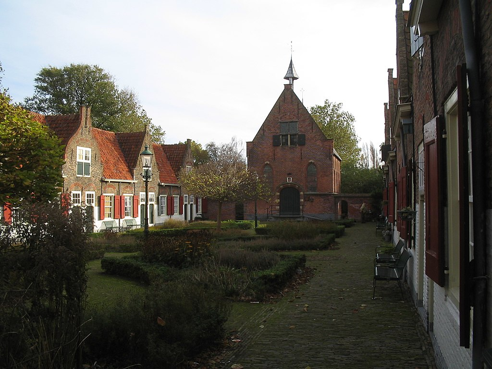

Wist je dat...
Het Heilige Geest Hofje
Het Heilige Geesthofje is een hofje in Naaldwijk. De heer van Naaldwijk, Hendrik IV van Naaldwijk, liet in 1496 in zijn testament opnemen dat een som geld bestemd was voor de inrichting van een huis voor vijf arme oude mannen. Het moest gebouwd worden: op 't erff van de cuer te Naaldwijk langes de kercklaan. Door het kerkelijk armbestuur werd het houten huis later vervangen door vijf kleine huisjes. Frederik Hendrik van Oranje liet, als heer van Naaldwijk, vijftien huisjes bouwen in de vorm van een hofje. Daarvan waren er vijf voor mannen en tien voor vrouwen (bron: Wikipedia).
Het Tramhuisje

Het tramstation in Naaldwijk is een tramstation van de Westlandsche Stoomtramweg Maatschappij en dateert uit 1907. Dit tramstation heeft tot de helft van de jaren 60 dienstgedaan en werd gesloten doordat het vervoer over het spoor werd overgenomen door het wegtransport en het station dus overbodig was geworden (Bron: Wikipedia). Het Tramhuisje is tegenwoordig in ere hersteld. Waar we vroeger wachtten op de stoomtram, blaas je nu stoom af en geniet je van onze heerlijke koffie, thee, lunch of borrel en high tea/wine aan de Verspycklaan 1 in Naaldwijk. Het Tramhuisje is anno 2017 weer in gebruik als fijne plek waar je bijpraat, een moment van rust pakt of een zakelijke afspraak treft. Reserveren kan via de website (bron: Tramhuisje.nl).